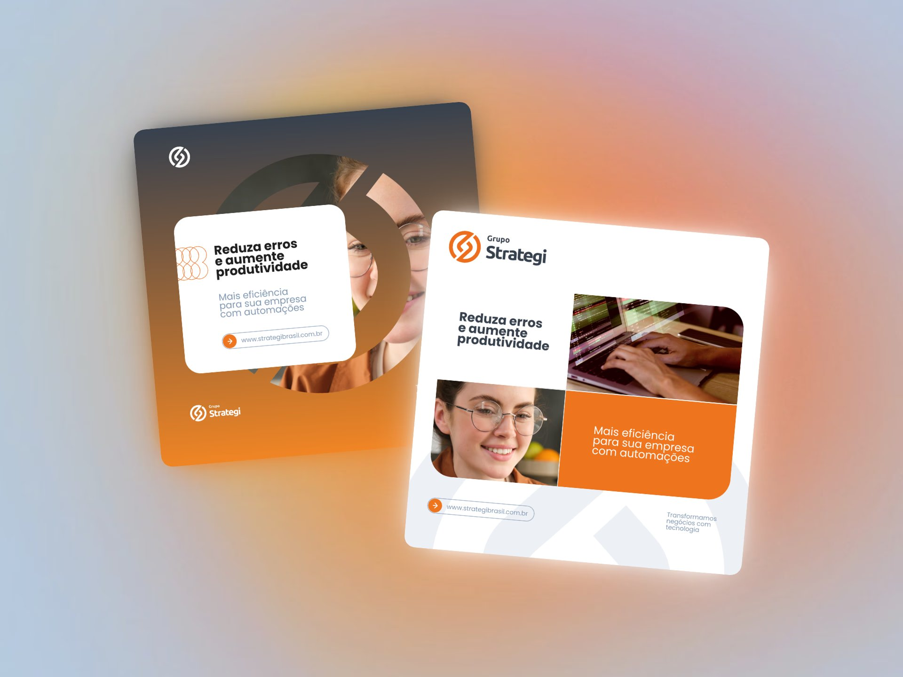
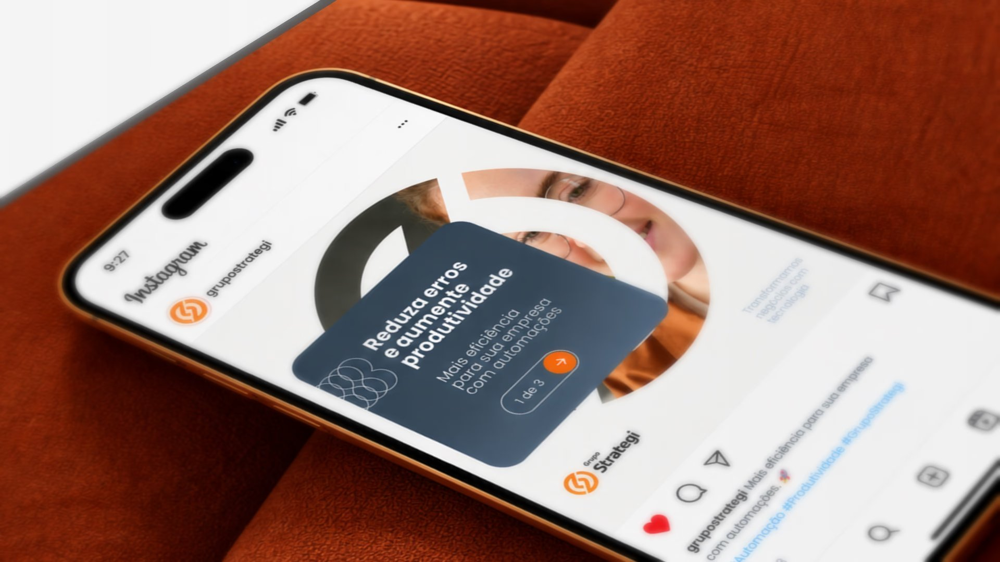
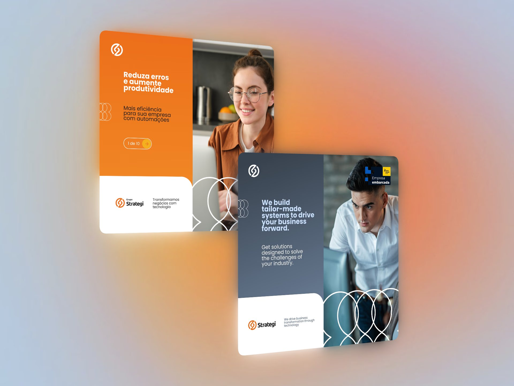
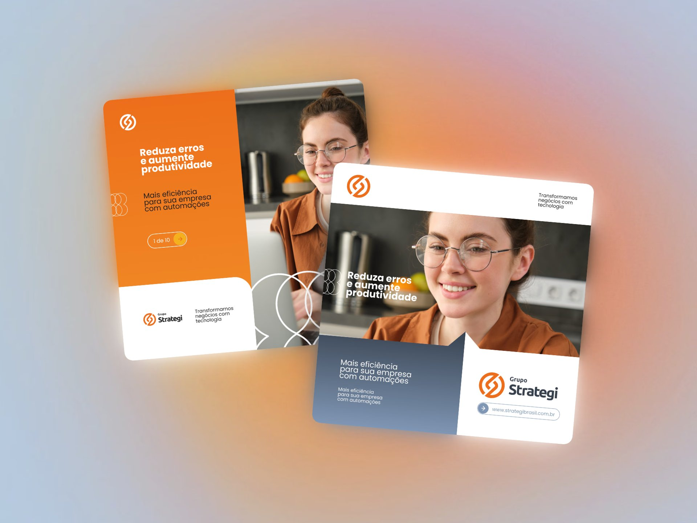
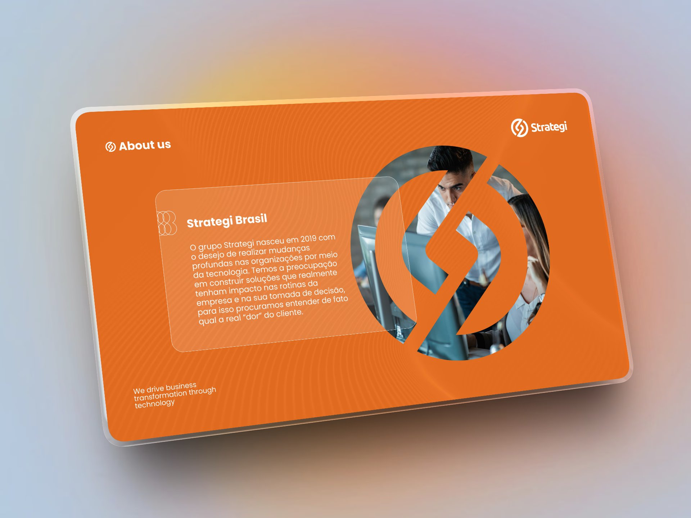
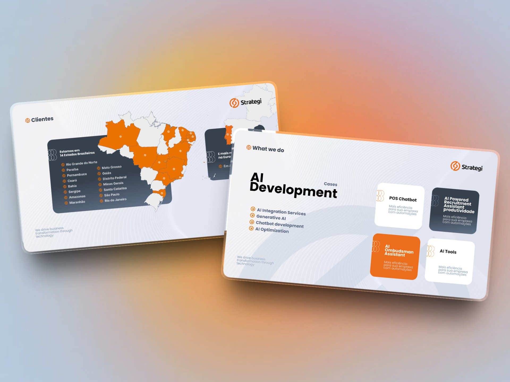
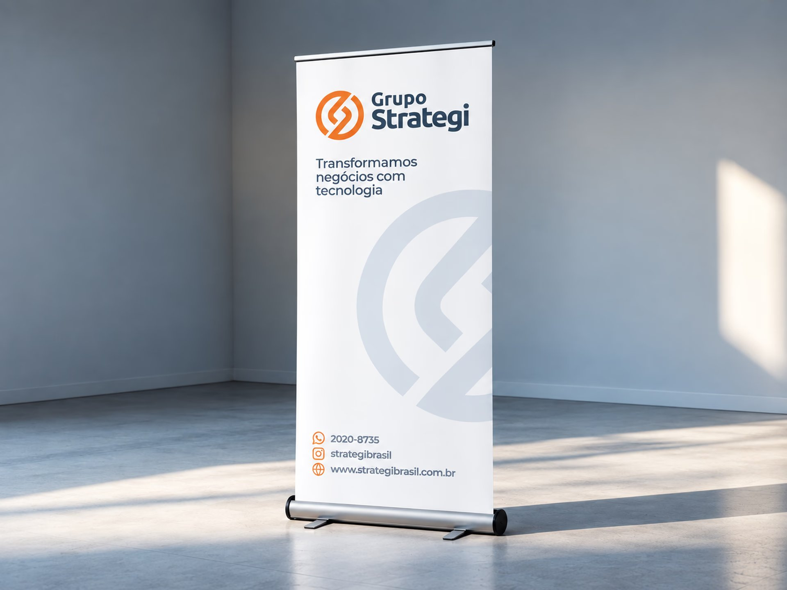
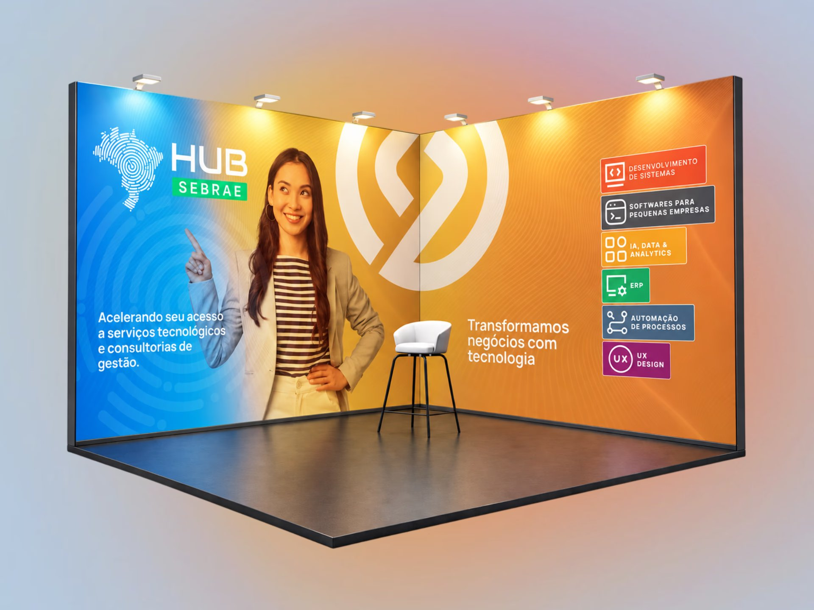

Canais digitais
Nas redes sociais, a linguagem foi adaptada para diferentes mensagens e formatos, mantendo unidade entre as publicações e permitindo que a comunicação se desdobrasse conforme a necessidade.



Branding · Sistema visual
Uma linguagem visual única e versátil para as cinco frentes do grupo, aplicada das redes sociais aos eventos, com percepção premium e produção ágil.
O Grupo Strategi atua em cinco frentes distintas. Cada área tem seu próprio público, tipo de mensagem e ritmo de comunicação, mas todas precisavam ser reconhecidas como parte da mesma marca, seja nas redes sociais, em apresentações para clientes e parceiros ou em eventos.
Porém, cada peça era criada de forma isolada, sem padrões bem definidos. O resultado era uma comunicação inconsistente, difícil de reconhecer e lenta de produzir.
Para resolver isso, era necessário criar uma linguagem visual versátil o suficiente para sustentar uma produção constante de conteúdo, atendendo a todas as frentes de forma consistente. Ao mesmo tempo, era preciso evitar a monotonia: um feed com muitas publicações sobre temas distintos precisava manter a unidade da marca e continuar visualmente interessante.
Além disso, a comunicação precisava transmitir uma percepção premium, à altura do posicionamento do grupo como fornecedor de soluções de tecnologia de alto valor, voltadas a decisões estratégicas de negócio.
Fui responsável direto por definir os elementos do sistema visual, criar os padrões de aplicação e produzir todas as peças.
Trabalhei junto com a direção, com base em diagnósticos de necessidades, alinhamentos de expectativas e testes visuais para validar a linguagem e garantir sua aplicação.

Em vez de criar peças isoladas, o trabalho partiu da definição de um sistema: um conjunto de elementos e regras que pudesse ser reaplicado em qualquer ponto de contato.
O sistema se apoia em três grafismos com funções distintas. O padrão de círculos entrelaçados atua como demarcador visual, com formas dinâmicas que transmitem movimento e versatilidade. O símbolo da marca aparece como reforço conceitual, aplicado de forma secundária e com transparência. E o símbolo também funciona como máscara para imagens, criando um reforço conceitual mais dinâmico e trazendo pessoas para dentro da identidade. Com funções bem definidas, os grafismos podem ser combinados de formas diferentes sem perder coerência, o que ajuda a evitar a repetição no feed.
A paleta é contida, com um azul-grafite como base, o laranja da marca como cor de destaque e um azul acinzentado de apoio. O laranja é usado com parcimônia, em pontos de atenção como o símbolo e as chamadas para ação. Texturas de linhas em onda, que remetem a tecnologia e fluxo de dados, e de granulado, que acrescenta profundidade às superfícies, completam a linguagem. Juntas, essas escolhas sustentam a percepção premium da comunicação.
Uma sans-serif geométrica em diferentes pesos organiza a leitura: títulos em negrito para a mensagem principal, texto de apoio em peso regular e informações complementares em tamanho reduzido. A hierarquia clara garante legibilidade em formatos pequenos, como os posts, e mantém um tom moderno e objetivo, coerente com uma empresa de tecnologia.
As peças combinam um card com cantos arredondados, que concentra o texto, e imagens recortadas pelo símbolo da marca. A assinatura com logo e tagline em posições fixas cria uma moldura reconhecível, enquanto o centro da peça varia de acordo com a mensagem. Nos carrosséis, um indicador de navegação na cor de destaque orienta a leitura.
Os modelos foram organizados em uma biblioteca de templates no Figma, disponibilizada para a equipe de social media. Com isso, o time passou a produzir peças com autonomia, aplicando a linguagem visual de forma consistente sem depender da criação de cada peça do zero.

Nas redes sociais, a linguagem foi adaptada para diferentes mensagens e formatos, mantendo unidade entre as publicações e permitindo que a comunicação se desdobrasse conforme a necessidade.



A mesma linguagem estruturou apresentações e materiais usados para apresentar a marca, seus serviços e sua atuação.


Totens, stands, banners e materiais de identificação estenderam o sistema para eventos e ambientes físicos, conectando a comunicação digital ao contato presencial com a marca.


O sistema visual passou a sustentar a comunicação das cinco frentes do Grupo Strategi com uma linguagem única, reconhecível em todos os pontos de contato: redes sociais, apresentações para clientes e parceiros, eventos e ambientes físicos.
Com a biblioteca de templates no Figma, a equipe de social media ganhou autonomia para produzir conteúdo sem depender da criação de cada peça do zero. A produção deixou de ser caso a caso e passou a seguir padrões definidos, tornando-se mais ágil e consistente.
A variedade de modelos permitiu manter um volume constante de publicações sobre temas distintos sem tornar o feed repetitivo, enquanto a paleta contida, as texturas e os grafismos reforçaram a percepção premium da marca.